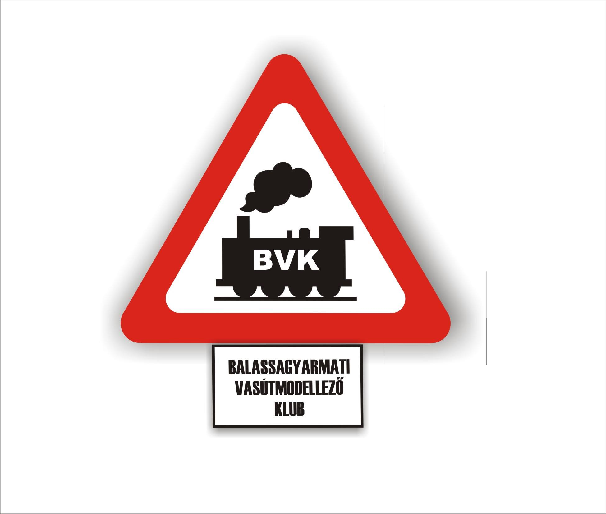
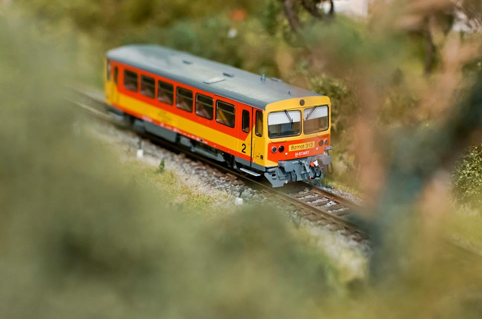
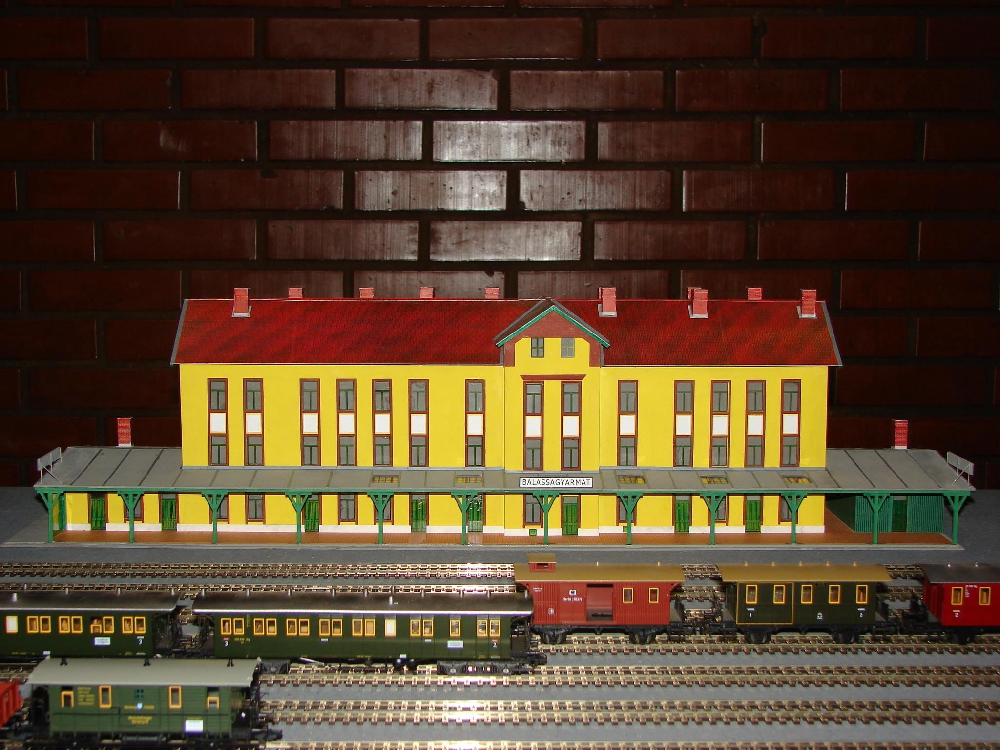

A club címere

Hely: Balassagyarmat
Cím: Balassagyarmati Galéria
Modellezéssel kapcsolatos linkek
A vasútmodellezés

Ez egy bzdmot 313 as pályaszámú motorvonat.Ez az én modelleim legritkább darabja.az országban 10 db készült belőle más más pályaszámmal.
A háború elötti Balassagyarmat vasútállomás

A háborúk elött így nézett ki az állomás.a háborúban egy bomba az egekbe repítette.A háború után egy szintesre vissza építették.